An accurate, richly-annotated dataset/benchmark for training/testing VLMs and World Models on understanding hypothetical object motions, made by a scalable, automatic pipeline
Stanford University · *equal contribution
FlowBench-Real: 89.9% when it must imagine the move, 93.0% when shown the movement outcome
9 open models on FlowBench-Real; chance is 37.6%
On FlowBench-Real after training on FlowBench-Sim only (3 open models)
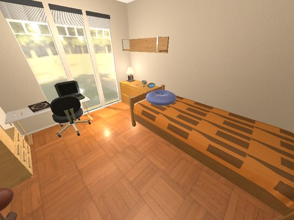
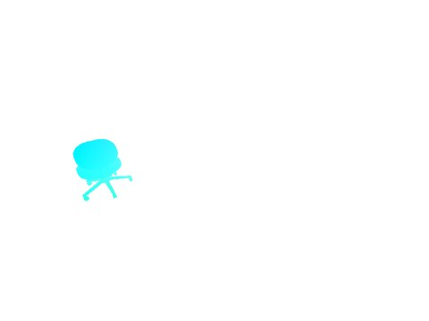
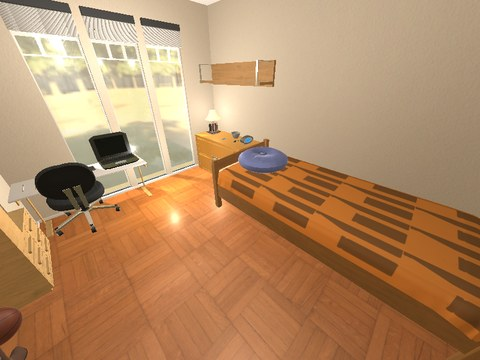
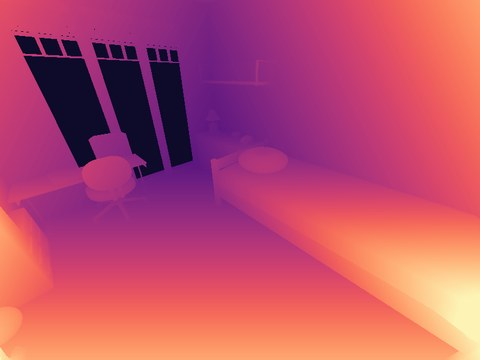
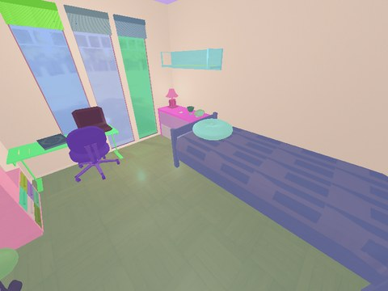
Before and after images for every motion; exact flow, depth and masks for every Sim motion
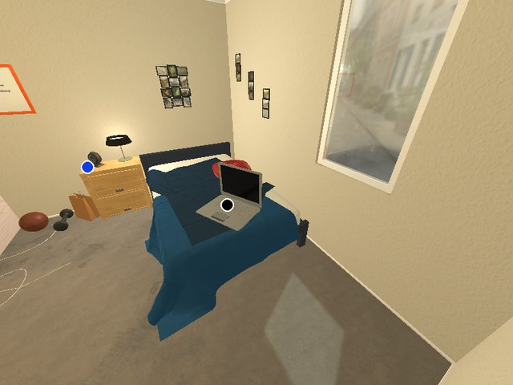
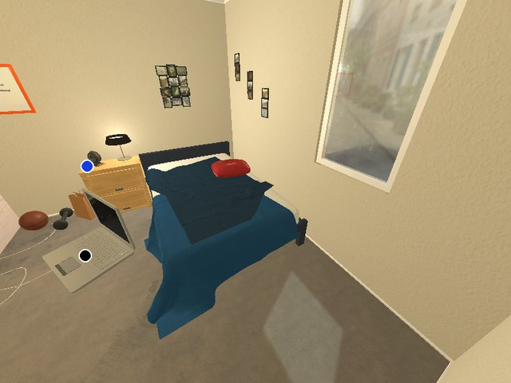
FlowBench-Sim · iTHOR · Occlusion
Move the laptop (marked black) 0.89m left and 0.54m along the camera backward axis. In the after image, is the alarmclock (marked blue) occluded by the laptop (marked black) so that it is partly or fully hidden, or is it totally visible?
People 1/1 · GPT-6 Astra ✗ · Qwen3-VL-8B ✓, after Sim training ✓
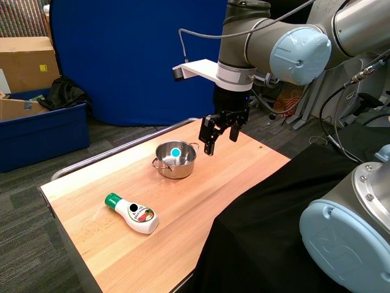
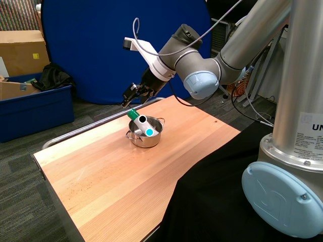
FlowBench-Real · Berkeley UR5 · Occlusion
For scale, the object marked cyan is about 13 cm across at its widest point.
If the robot arm moves the object marked black so that, from the camera's perspective, its center ends up about 5 cm to the right, and about 14 cm up from where it was before (directions as seen from the camera), after this move, will the object marked cyan be fully visible, or will part of your view of the object marked cyan be blocked?
People 2/2 · GPT-6 Astra ✓ · Qwen3-VL-8B ✗, after Sim training ✗
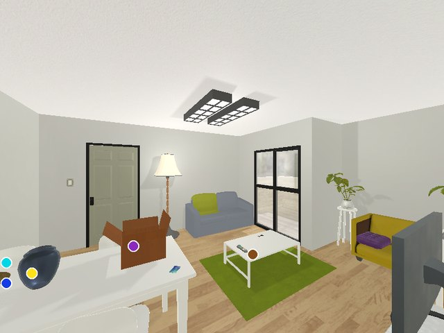
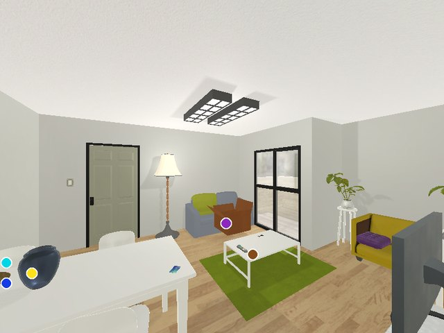
FlowBench-Sim · iTHOR · Closer To
Move the box (marked purple) 0.84m right and 0.63m along the camera forward axis. After the move, is the box (marked purple) closer to which of the following?
People 1/1 · GPT-6 Astra ✓ · Qwen3-VL-8B ✓, after Sim training ✓
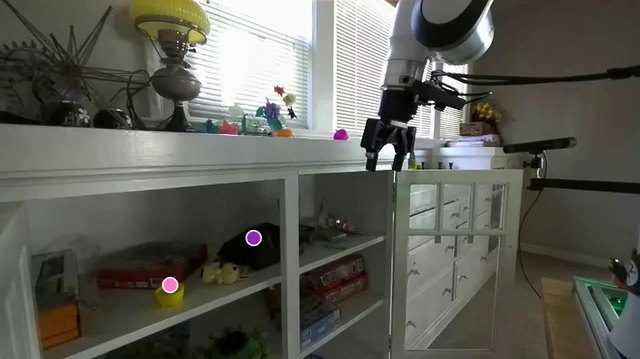
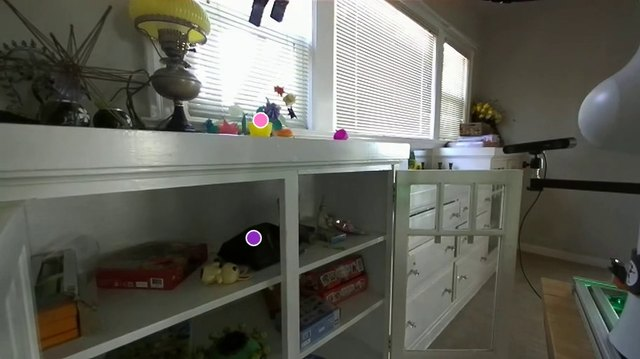
FlowBench-Real · DROID · Depth Order
For scale, the object marked purple is about 19 cm across at its widest point.
If the robot arm moves the object marked pink so that, from the camera's perspective, its center ends up about 12 cm to the right, and about 45 cm up from where it was before (directions as seen from the camera), will the object marked pink end up closer to the camera than the object marked purple?
People 1/2 · GPT-6 Astra ✗ · Qwen3-VL-8B ✓, after Sim training ✗
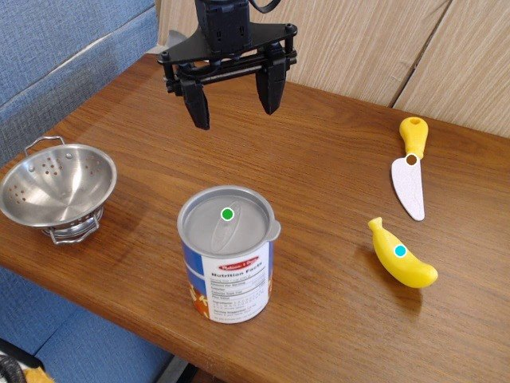
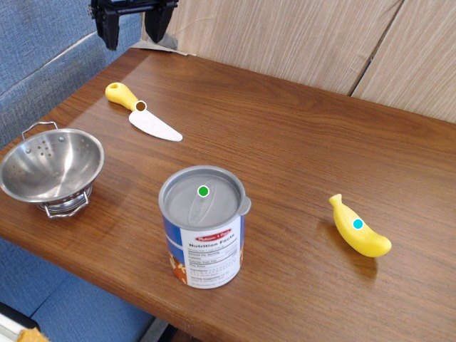
FlowBench-Real · Bridge V2 · Left Right
For scale, the object marked green is about 5 cm across at its widest point.
If the robot arm moves the object marked brown so that, from the camera's perspective, its center ends up about 19 cm to the left, and about 3 cm up from where it was before (directions as seen from the camera), will the object marked brown end up to the left of the object marked cyan, from the camera's viewpoint?
People 2/2 · GPT-6 Astra ✓ · Claude Fable 5.1 ✓ · Qwen3-VL-8B ✓, after Sim training ✓
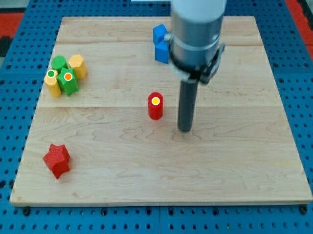
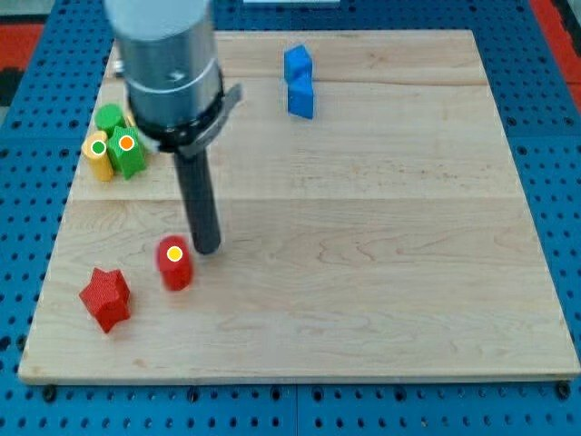
FlowBench-Real · Language-Table · Left Right
For scale, the object marked orange is about 5 cm across at its widest point.
If the robot arm moves the object marked yellow so that, from the camera's perspective, its center ends up about 12 cm to the left, and about 7 cm down from where it was before (directions as seen from the camera), will the object marked yellow end up to the left of the object marked green, from the camera's viewpoint?
People 2/2 · GPT-6 Astra ✓ · Qwen3-VL-8B ✗, after Sim training ✗
Test questions, with how people and models answered them without seeing the after image.
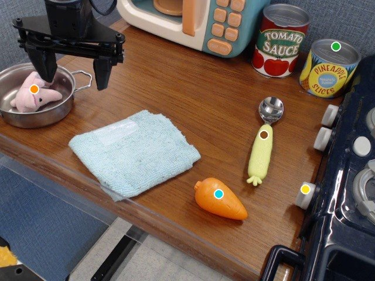
→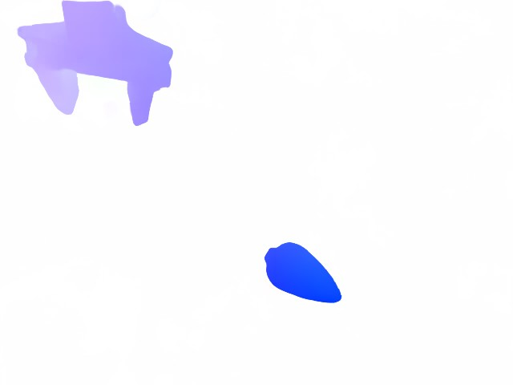
→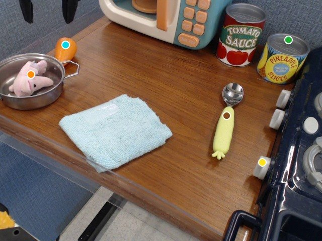
FlowBench-Real · Bridge V2 · Closer To
Move cyan 12 cm left and 11 cm up. Which object will it end up closest to? → orange
People 2/2 · GPT-6 Astra ✗ · Claude Fable 5.1 ✗ (✓ seeing the after image) · Qwen3-VL-8B ✓, after Sim training ✓
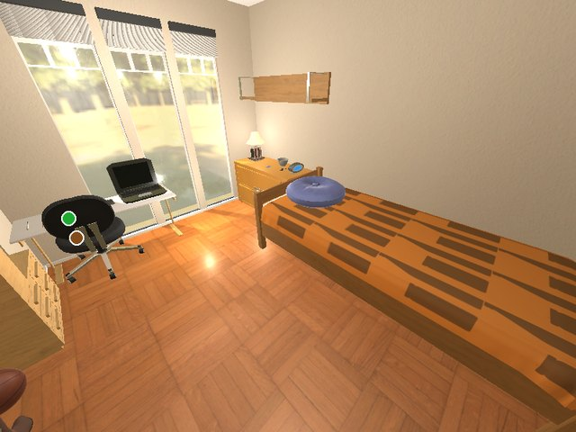
FlowBench-Sim · iTHOR · Occlusion
Move the chair brown 0.30 m left and 0.17 m toward the camera. Will the book green be hidden? → Yes, partly hidden
People 1/1 · GPT-6 Astra ✓ · Qwen3-VL-8B ✗, after Sim training ✓
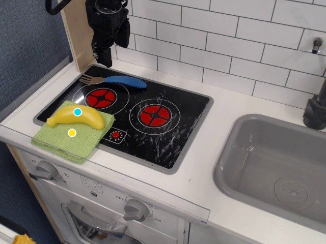
→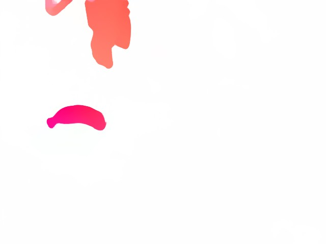
→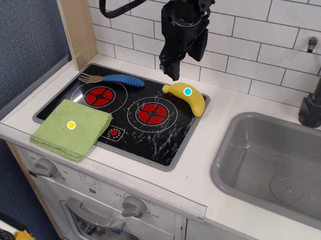
FlowBench-Real · Bridge V2 · Occlusion
Move cyan 18 cm right and 4 cm up. Will yellow be fully visible? → Yes
People 2/2 · GPT-6 Astra ✓ · Qwen3-VL-8B ✗, after Sim training ✓
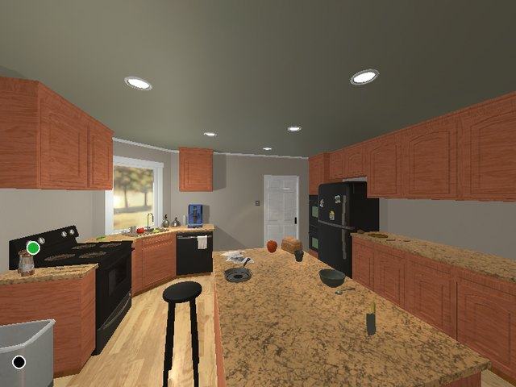
→→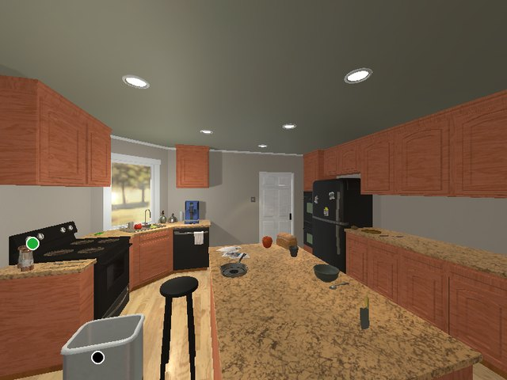
FlowBench-Sim · iTHOR · Left Right
Move the garbage can black 0.75 m right. Will it be left of the stove knob green? → No
GPT-6 Astra ✓ · Qwen3-VL-8B ✓, after Sim training ✓
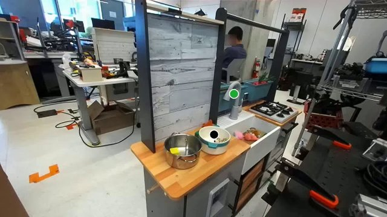
→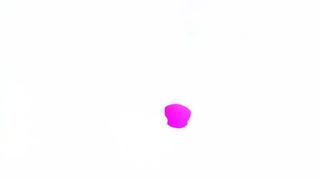
→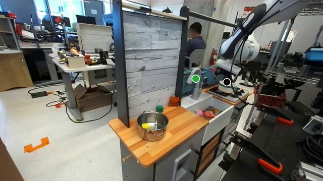
FlowBench-Real · DROID · Depth Order
Move black 47 cm right and 19 cm up. Will it end up closer to the camera than green? → No
People 1/2 · GPT-6 Astra ✗ · Claude Fable 5.1 ✗ (✓ seeing the after image) · Qwen3-VL-8B ✓, after Sim training ✓
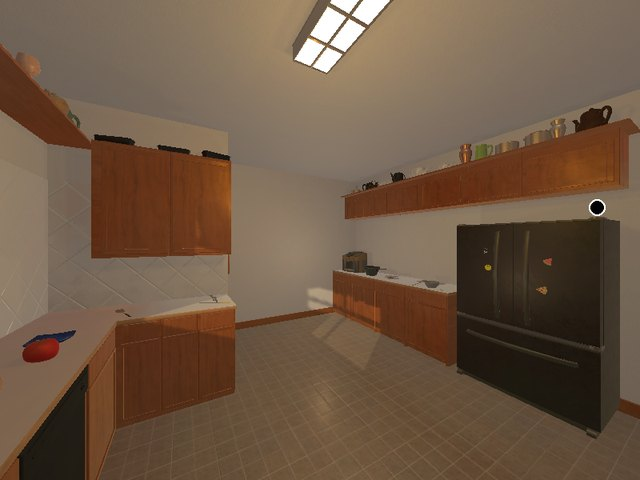
→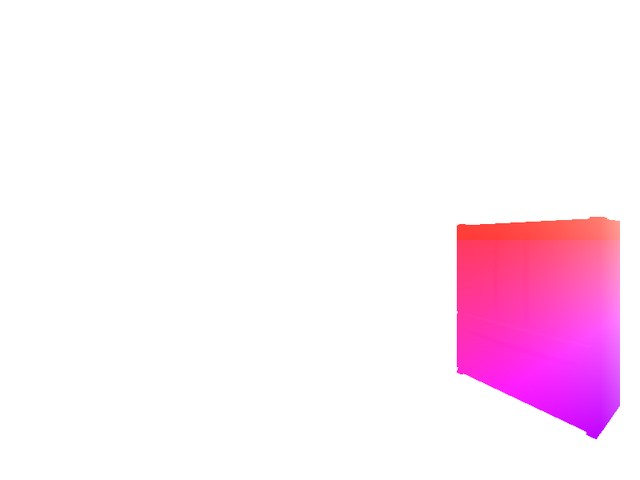
→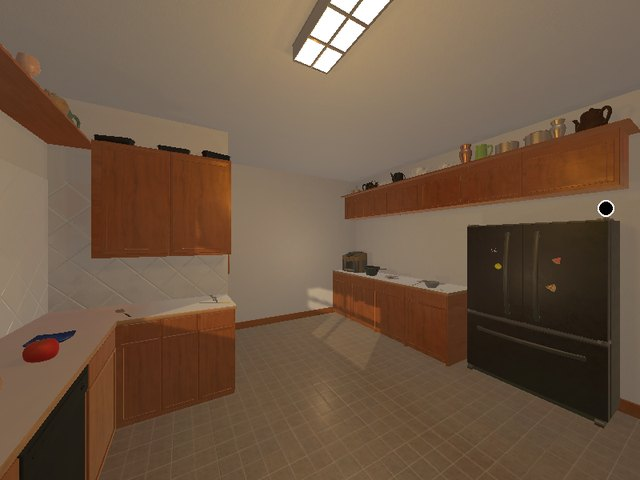
FlowBench-Sim · iTHOR · Contact Wall
Move the fridge black 0.19 m right and 0.11 m away from the camera. Will it touch a wall? → Yes
People 1/1 · GPT-6 Astra ✓ · Qwen3-VL-8B ✓, after Sim training ✓
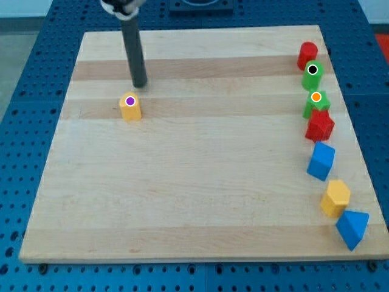
→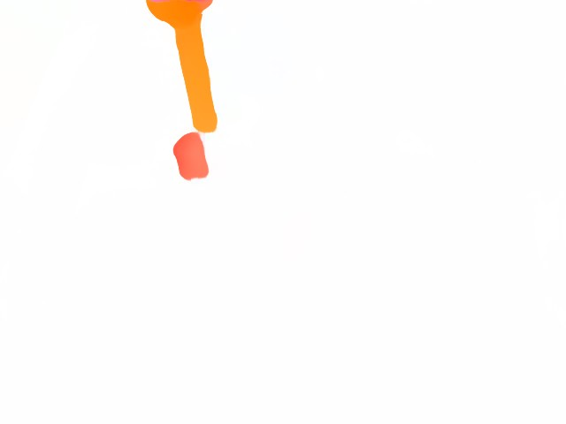
→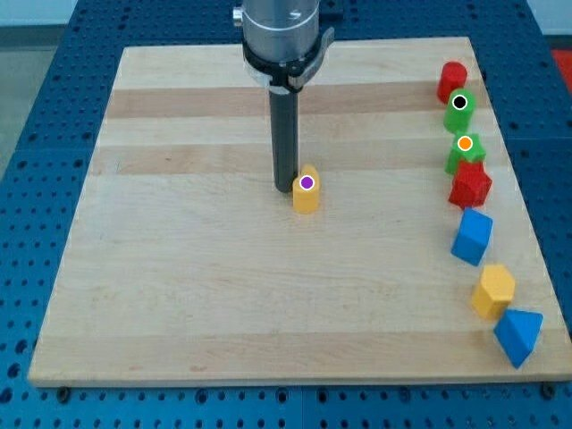
FlowBench-Real · Language-Table · Near Object
Move purple 15 cm right and 4 cm down. Will it end up within 30 cm of orange? → Yes
People 2/2 · GPT-6 Astra ✗ · Qwen3-VL-8B ✓, after Sim training ✓
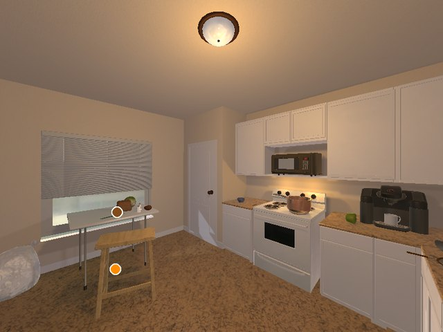
→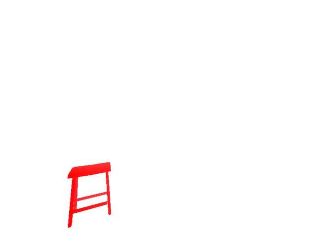
→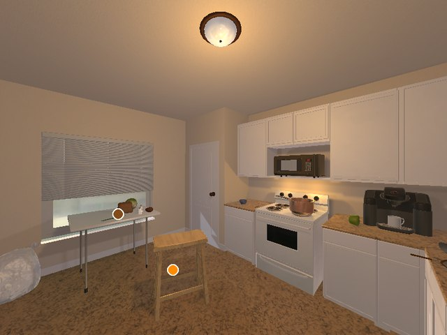
FlowBench-Sim · iTHOR · Left Right
Move the stool orange 0.60 m right. Will it be right of the bread brown? → Yes
People 1/1 · GPT-6 Astra ✓ · Qwen3-VL-8B ✓, after Sim training ✓
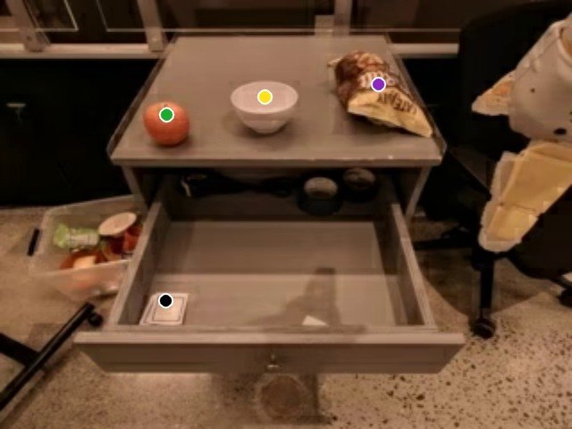
→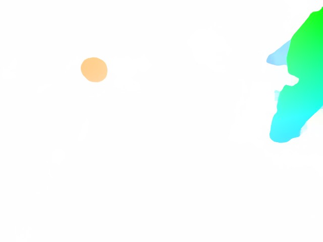
→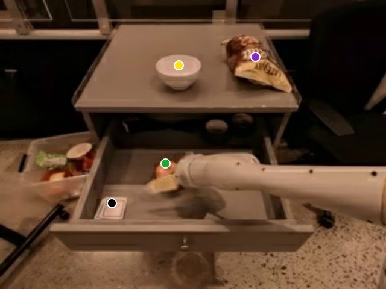
FlowBench-Real · RT-1 · Closer To
Move green 15 cm right and 27 cm down. Which object will it end up closest to? → black
People 1/2 · GPT-6 Astra ✓ · Qwen3-VL-8B ✗, after Sim training ✗
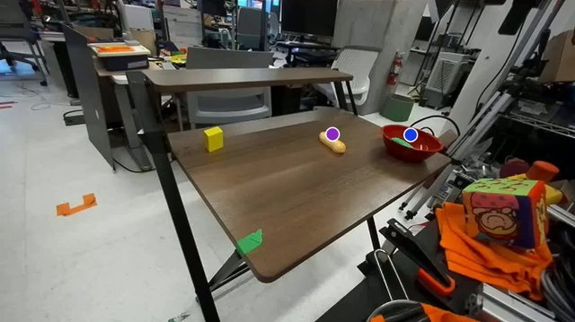
→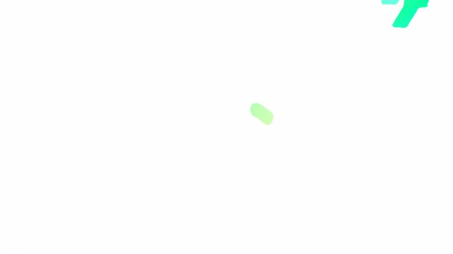
→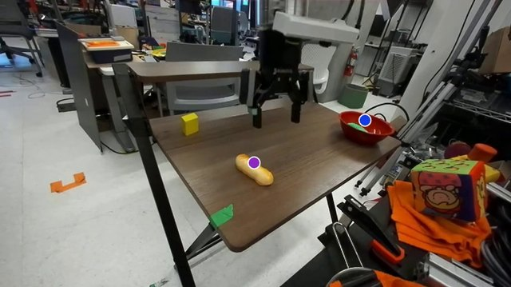
FlowBench-Real · DROID · Near Object
Move purple 13 cm left and 13 cm down. Will it end up within 20 cm of blue? → No
People 2/2 · GPT-6 Astra ✓ · Claude Fable 5.1 ✓ · Qwen3-VL-8B ✗, after Sim training ✓
Simulated homes for scale, real robot tabletops for transfer.
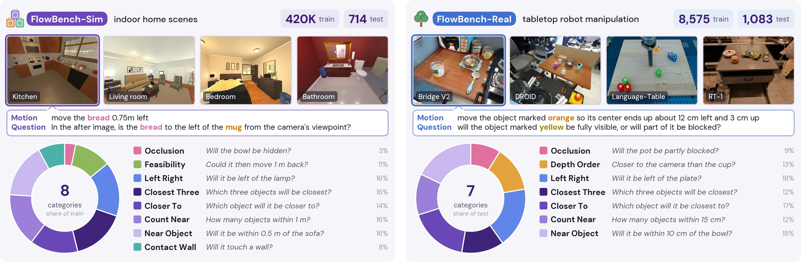
One motion, every layer. Sim layers are exact simulator output, released for every Sim question; Real answers are computed from layers measured with SAM 3, Depth Anything 3 and AllTracker.
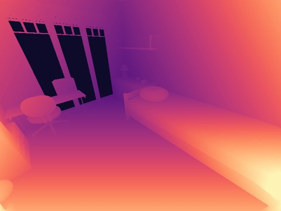
Depth, afterMove the chair brown 0.30 m left and 0.17 m toward the camera.motion_command
| Train | Input | Target |
|---|---|---|
| Text → flow | before image + motion | optical flow |
| Flow → next frame | before image + flow | after image |
| Text → next frame | before image + motion | after image |
| Counterfactual VQA | before image + motion + question | answer |
| Static VQA | after image + question about it | answer |
Accuracy when the model sees only the before image and the motion.
base modelfine-tuned on FlowBench-Sim
must imagineoutcome shown
| Model | FlowBench-Real | FlowBench-Sim |
|---|---|---|
| People | 77.2 | 64.2 |
| Proprietary | ||
| GPT-6 Astra, max effort† | 89.9 | 60.2 |
| Claude Fable 5.1, max effort‡ | 88.9 | – |
| GPT-6 Astra, low effort† | 88.4 | 54.6 |
| Claude Fable 5.1, low effort‡ | 85.3 | 56.6 |
| GPT-5.6 Luna, low effort‡ | 65.0 | 47.6 |
| Open-source | ||
| Gemma-4-31B | 50.4 | 44.6 |
| LLaVA-OV-2-8B | 45.0 | 51.1 |
| Gemma-4-12B | 44.6 | 41.6 |
| Qwen3-VL-32B | 44.4 | 48.3 |
| Qwen3-VL-8B | 42.7 | 46.9 |
| Qwen3.5-9B | 42.7 | 44.3 |
| InternVL3.5-8B | 42.7 | 40.6 |
| InternVL3.5-30B-A3B | 41.2 | 41.4 |
| LLaVA-OV-1.5-8B | 41.0 | 47.2 |
| Trained on FlowBench-Sim | ||
| Qwen3.5-9B | 67.7 | 76.6 |
| LLaVA-OV-2-8B | 64.9 | 76.7 |
| Qwen3-VL-8B | 59.6 | 76.3 |
| Ψ-0.6 | 51.4 | 73.1 |
| Ψ-0.6, imagine then answer | – | 50.7 |
| Chance | 37.6 | 35.8 |
Accuracy (%). People: 12 participants, 403 answers on Real; 120 answers on Sim. † 50% and ‡ 20% of questions. Mean of three answer orders for open models.
Predict the optical flow of the stated motion from the before image, zero-shot and after training on FlowBench-Sim.
| Method | Acc ↑ | rEPE ↓ | ΔPSNR ↑ |
|---|---|---|---|
| Zero flow | 0.0% | 1.000 | +0.00 dB |
| Grounding DINO + SAM 2 + Depth Pro* | 50.2% | 0.581 | – |
| + depth calibration | 50.8%+0.6 | 0.552 | – |
| FOFPred | 0.2% | 0.985 | – |
| + trained on FlowBench-Sim (LoRA) | 2.4%+2.3 | 0.915 | – |
| Qwen-Image-Edit§ | 2.9% | 2.432 | -1.81 dB |
| + trained on FlowBench-Sim (QLoRA) | 7.9%+5.0 | 2.154 | -1.63 dB |
| InstructPix2Pix§ | 0.5% | 1.620 | -4.92 dB |
| + trained on FlowBench-Sim (plain MSE) | 10.5%+10.0 | 2.659 | -3.34 dB |
| + trained on FlowBench-Sim (SoM target) | 13.7%+13.2 | 2.938 | -0.97 dB |
| + trained on FlowBench-Sim (mask-weighted) | 16.4%+15.9 | 2.655 | -3.99 dB |
| Ψ-0.6, default decoding | 10.8% | 0.858 | +0.79 dB |
| + trained on FlowBench-Sim | 36.0%+25.2 | 0.603 | +1.60 dB |
| Ψ-0.6, motion-first decoding + text guidance | 52.1% | 0.534 | +1.03 dB |
| + trained on FlowBench-Sim | 61.7%+9.6 | 0.423 | +0.94 dB |
FlowBench-Sim test split. Acc: predictions within 40% of the true motion. rEPE: error relative to the motion (no motion = 1.000). ΔPSNR: generated after frame vs. copying the before frame, changed region. * given camera intrinsics. § given the true object mask.
Answers come from simulator state or measured 3D geometry. No model picks an answer.
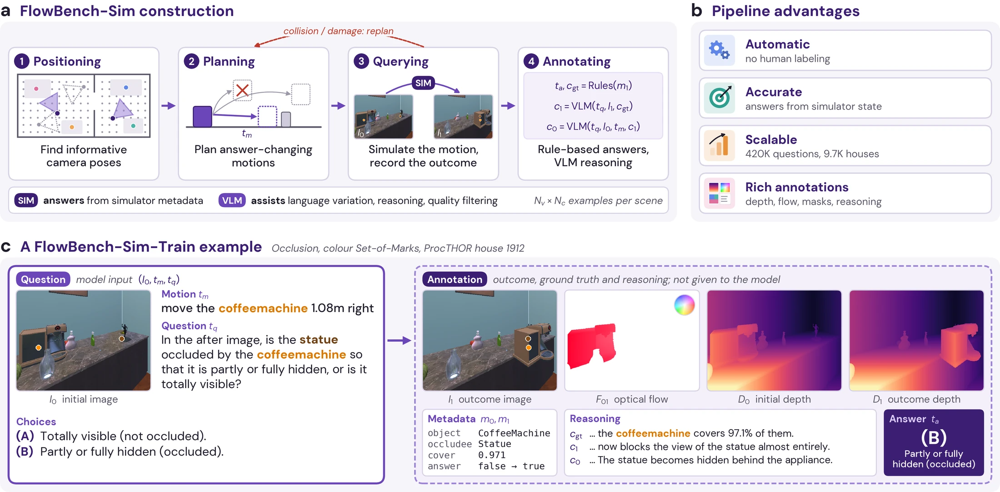
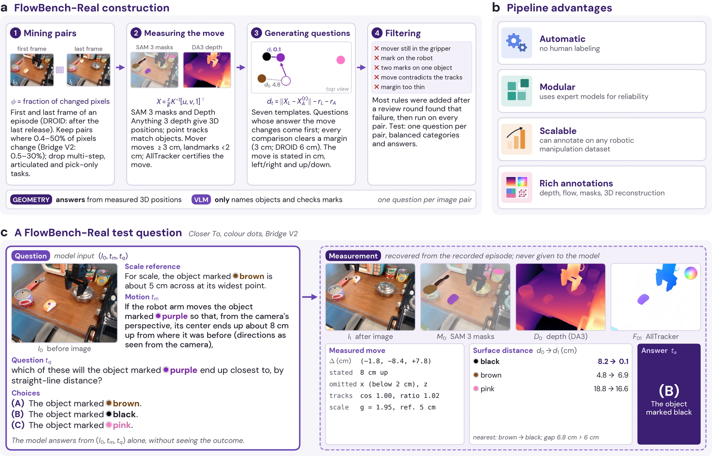
Images, questions and the Sim ground truth load with Hugging Face datasets.
from datasets import load_dataset real = load_dataset("StanfordNeuroAILab/FlowBench", "real_colour_som", split="test") row = real[0] row["image_before"], row["motion_command"], row["question"] row["image_after"], row["static_question"], row["answer"] # 420K Sim training questions: stream them sim = load_dataset("StanfordNeuroAILab/FlowBench", "sim_colour_som", split="train", streaming=True) # exact flow, depth, segmentation, masks per Sim question gt = load_dataset("StanfordNeuroAILab/FlowBench", "sim_ground_truth", split="test")
| Config | Train | Test | Size |
|---|---|---|---|
| sim_colour_som | 419,612 | 714 | 62 GB |
| sim_red_som | 419,612 | 714 | 60 GB |
| sim_natural | 419,612 | 714 | 45 GB |
| sim_ground_truth | 419,612 | 714 | 121 GB |
| real_colour_som | 8,575 | 1,083 | 1.2 GB |
| real_red_som | 8,575 | 1,083 | 0.9 GB |
@article{liu2026flowbench,
title = {FlowBench: Counterfactual Imagination Training for Spatial Intelligence},
author = {Liu, Yifan and Zhang, Baihan and Aw, Khai Loong and Kotar, Klemen and Yamins, Daniel L. K.},
journal = {arXiv preprint arXiv:2611.03937},
year = {2026}
}